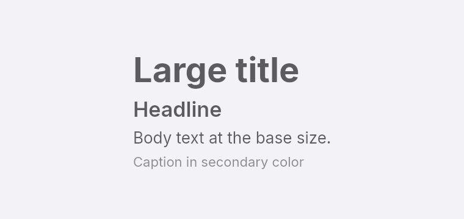
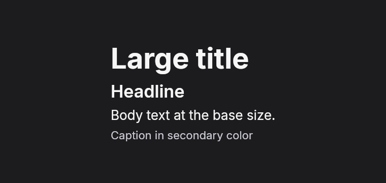
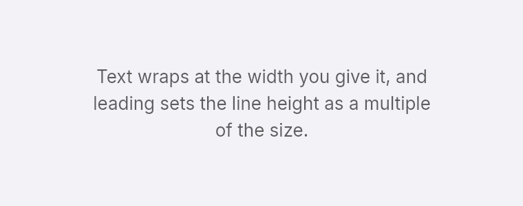
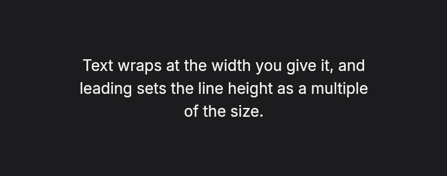
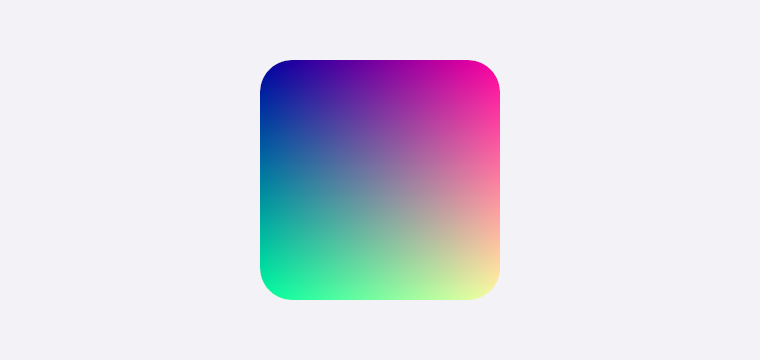
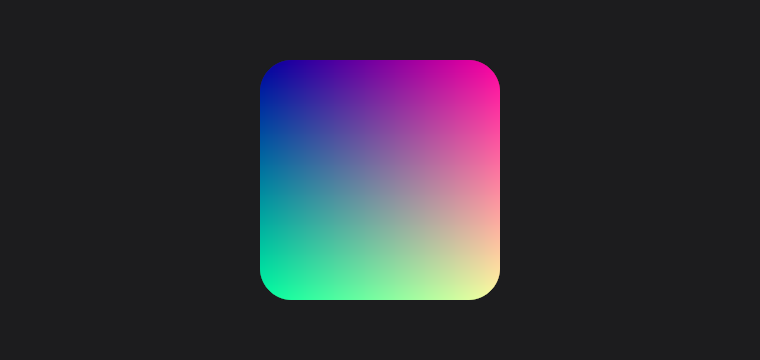

Text and images
Text is set in Inter, which is embedded in the library, so it measures the same on every machine. Embun does not use Apple's fonts. Set Settings::system_fonts(true) to also load installed fonts, which you need for emoji and for scripts Inter does not cover.
Size, weight and color
text_xs up to text_4xl set common sizes, and text_size takes any size in pixels. font_medium, font_semibold and font_bold set the weight. Size, weight and color are inherited, so set them on a parent to style everything inside it.


fn text_styles(theme: &Theme) -> Element<Msg> {
column()
.gap_1()
.items_start()
.child(text("Large title").text_3xl().font_bold())
.child(text("Headline").text_xl().font_semibold())
.child(text("Body text at the base size."))
.child(text("Caption in secondary color").text_xs().text_color(theme.secondary_label()))
}Wrapping and alignment
Text wraps at the width of its box. text_center and text_right align the lines, and leading sets the line height as a multiple of the font size.


fn text_wrapping(_theme: &Theme) -> Element<Msg> {
text("Text wraps at the width you give it, and leading sets the line height as a multiple of the size.")
.w(260.0)
.text_center()
.leading(1.5)
}Images
Image::from_rgba takes raw pixels. Image::open and Image::from_bytes read PNG and JPEG, and return an ImageError that names the file and the problem. Set w or h to scale an image, and rounded to clip its corners. When you set only one of them, the aspect ratio is kept.


fn image_scaled(_theme: &Theme) -> Element<Msg> {
let pixels: Vec<u8> = (0..64 * 64u32).flat_map(|i| [((i % 64) * 4) as u8, ((i / 64) * 4) as u8, 160, 255]).collect();
image(Image::from_rgba(64, 64, pixels)).w(120.0).h(120.0).rounded(16.0)
}let photo = Image::open("photo.jpg")?;
image(photo).w(200.0).rounded(10.0)